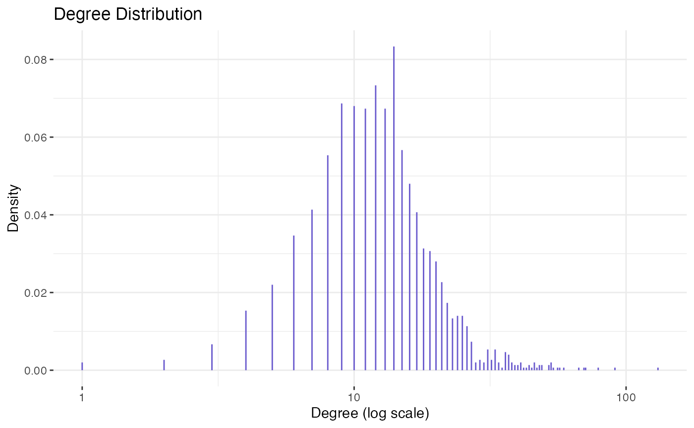
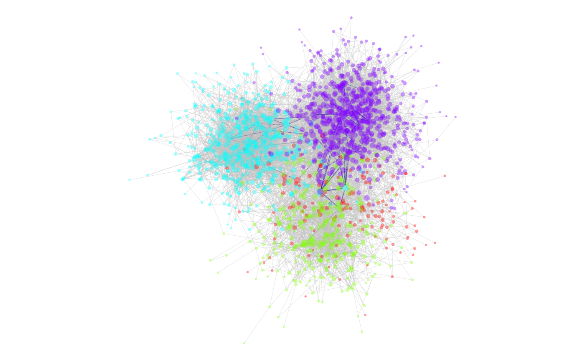
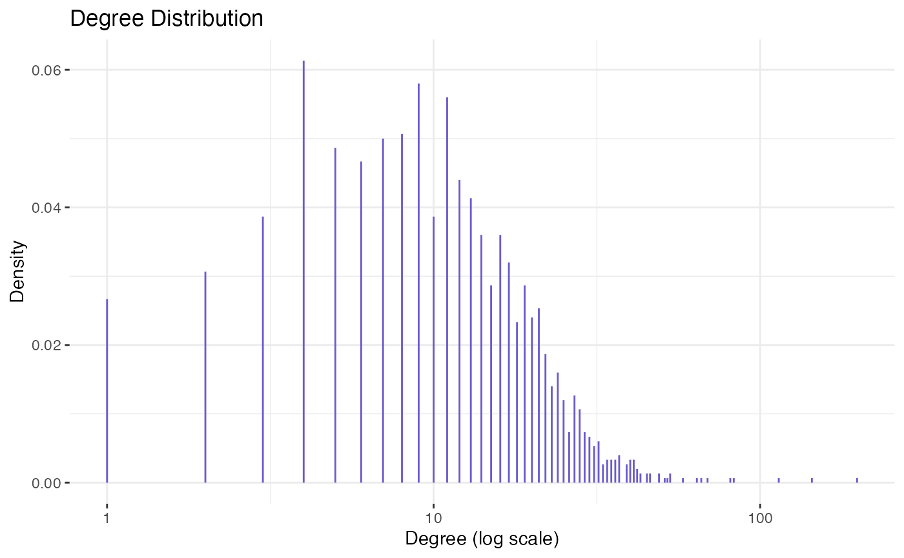

Visualization.RmdIn this article, we go through some of the basic visualization functionality in the nett package.
Let us sample a network from a DCSBM:
n = 1500 Ktru = 4 lambda = 15 # expected average degree oir = 0.1 pri = 1:Ktru set.seed(1234) theta <- EnvStats::rpareto(n, 2/3, 3) B = pp_conn(n, oir, lambda, pri=pri, theta)$B z = sample(Ktru, n, replace=T, prob=pri) # sample the adjacency matrix A = sample_dcsbm(z, B, theta)
We can plot the network using community labels \(z\) to color the nodes:
gr = igraph::graph_from_adjacency_matrix(A, "undirected") # convert to igraph object par(mar = c(0,0,0,0)) out = nett::plot_net(gr, community = z)
We can also plot the degree distribution:
nett::plot_deg_dist(gr)

Now consider a latent variable model with \(K\) communities as follows: The adjacency matrix \(A = (A_{ij})\) is generated as a symmetric matrix, with independent Bernoulli entries above the diagonal with \[\begin{align}\label{eq:dclvm:def} \mathbb E [\,A_{ij} \mid x, \theta\,] \; \propto \; \theta_i \theta_j e^{- \|x_i - x_j\|^2} \quad \text{and} \quad x_i = 2 e_{z_i} + \frac34 w_i \end{align}\] where \(e_k\) is the \(k\)th basis vector of \(\mathbb R^d\), \(w_i \sim N(0, I_d)\), \(\{z_i\} \subset [K]^n\) are multinomial labels (similar to the DCSBM labels) and \(d = K\). The proportionality constant in~ is chosen such that the overall network has expected average degree \(\lambda\)
We can generate from this model using the nett::sample_dclvm() function as follows:
d = Ktru labels = sample(Ktru, n, replace = T, prob = pri) labels = sort(labels) mu = diag(Ktru) x = 2*mu[labels, ] + 0.75*matrix(rnorm(n*d), n) A = sample_dclvm(x, lambda, theta)
Visualizing the network and its degree distribution goes as before:
gr = igraph::graph_from_adjacency_matrix(A, "undirected") # convert to igraph object par(mar = c(0,0,0,0)) out = nett::plot_net(gr, community = labels)

nett::plot_deg_dist(gr) #> Warning in nett::plot_deg_dist(gr): There are 0-degree nodes. Omitting them on #> log scale.

Let us compare with Political Blogs network accessable via polblogs.
nett::plot_deg_dist(polblogs) #> Warning in nett::plot_deg_dist(polblogs): There are 0-degree nodes. Omitting #> them on log scale.